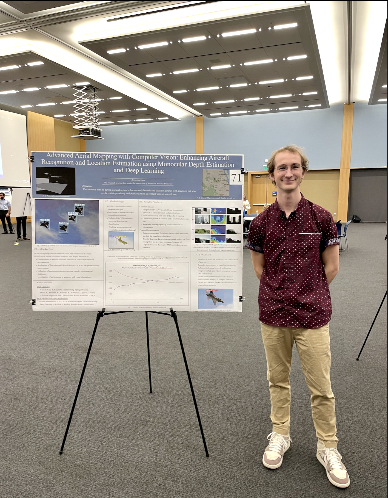

Logan Luna
Logan LunaSelected Awards

Embry-Riddle's Outstanding Undergraduate in Computer Science
2025 and 2026

IEEE-Eta Kappa Nu Best Paper Award
2025
For “Dueling Deep Q-Learning for Intrusion Detection” at IEEE SoutheastCon 2025.

1st Place, Embry-Riddle Student Research Symposium
2023
For “Enhancing Aircraft Recognition and Localization through Object Detection and Feature Point Tracking with Kalman Filtering”.
- DoW SMART (Science, Mathematics, and Research for Transformation) Scholarship, 2023–Present.
- Dean’s List, Honors Program, Embry-Riddle Aeronautical University.
Grants & Funding
$27,960Total funding secured
-
$24,000Spring 2026Center for Aerospace Resilient Systems (CARS) Research Grant
AI for Data Anomaly Detection in a Satellite Learning Laboratory (SATLL) (Project Lead).
-
$6002025Embry-Riddle Office of Undergraduate Research Spark Grant
Conference travel support for IEEE SoutheastCon 2025 (Project Lead).
-
$3,3602024–2025Embry-Riddle SIG Research Project Grant
Signal-Centric Remote Sensing via Alternative Preprocessing and Acoustic Processing for ML-Driven Applications (Project Lead).